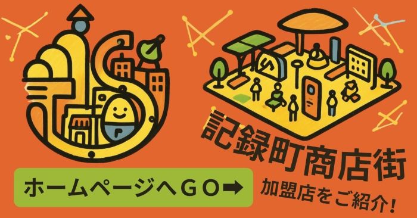

ピコぬ市商工会は、記録町の商店街をはじめとした市内事業者の活動を支援する団体です。 商店街の情報発信、加盟店同士の交流、地域行事の運営などを行っています。
| 所在地 | ピコぬ市記録町3丁目(商店街中央) |
|---|---|
| 加盟事業者 | 記録町の商店街を中心に10店舗(令和8年9月現在) |
| 主な活動 | 商店街だよりの発行、地域行事の運営、加盟店支援 |
商店街だより
記録町の商店街にある加盟店をご紹介する「商店街だより」を発行しています。 各店舗の営業時間や定休日、おすすめのポイントなどを掲載しています。

記録町の商店街の場所については観光案内もあわせてご覧ください。
お問い合わせ
ピコぬ市商工会事務局
ピコぬ市記録町3丁目(記録町商店街中央)
電話:ぬぬ-ぬかピコ-4105(よいとこ)
※商店街に関するお問い合わせ、加盟店募集についてなど、お気軽にご連絡ください。